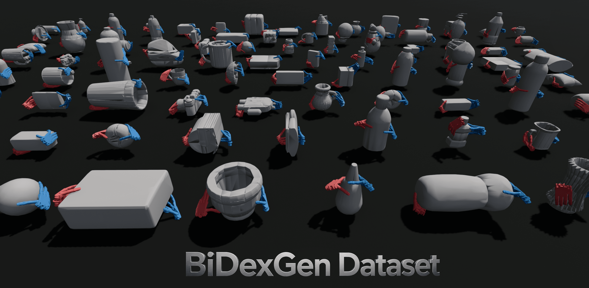
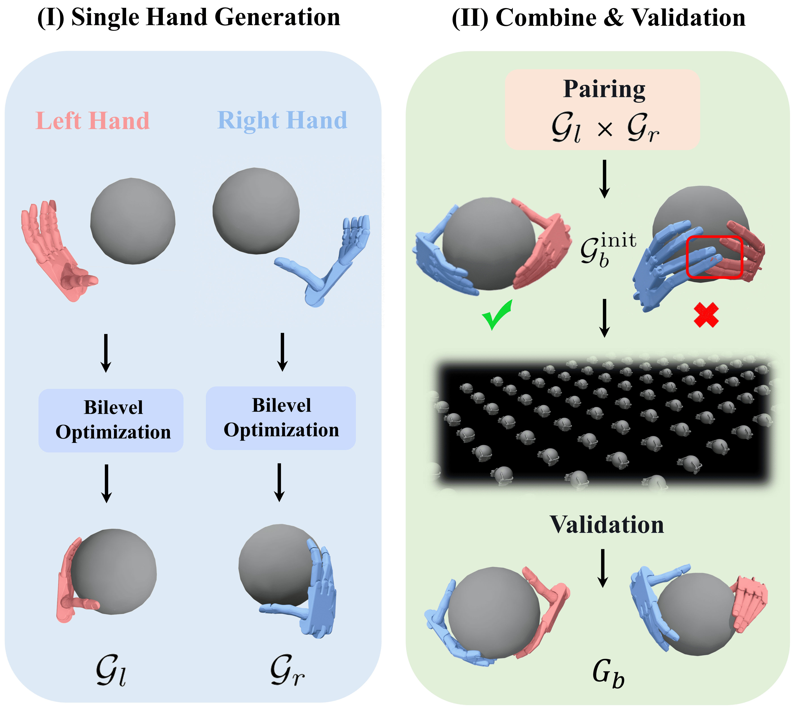
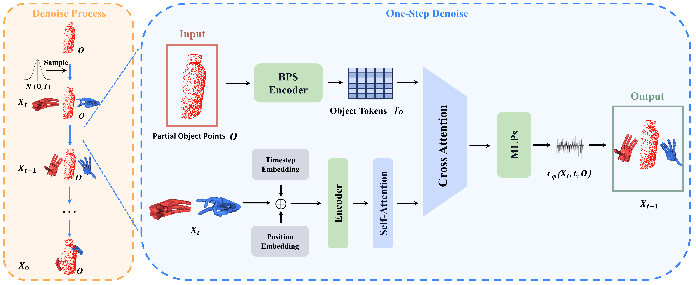

Data-driven bimanual dexterous grasping remains challenging due to the lack of large-scale physically valid datasets and the difficulty of generating feasible bimanual grasps from partial observations. We propose an efficient bimanual grasp synthesis pipeline that pairs optimized single-hand grasps and validates the resulting candidates through geometric filtering and physics simulation. Using this pipeline, we construct BiDexGen-Dataset, a large-scale synthesized bimanual grasp dataset containing millions of physically valid bimanual grasps across 2397 objects. To bring the synthesized dataset to real-world deployment, we further introduce BiDexGen, a diffusion-based generative model that directly predicts feasible bimanual grasp configurations from partial object point clouds. To improve robustness under partial perception, we design a contact-aware sampling strategy that aligns training partial observations with the corresponding bimanual grasp annotations based on fingertip contacts and palm approach directions, encouraging BiDexGen to generate grasps on observed object geometry. Experiments show that our synthesis pipeline outperforms prior bimanual grasp synthesis methods in simulation success rate and generation efficiency. Trained on BiDexGen-Dataset, BiDexGen achieves 68.47% success in simulation and 71.00% on a real dual-arm robotic system.


Cell Phone
Toaster
Curl Cream
Drinking Utensil
Toilet Paper
Video Game Console
Each partial point cloud corresponds to the bimanual grasp shown in the same position above.
Cell Phone
Toaster
Curl Cream
Drinking Utensil
Toilet Paper
Video Game Console
